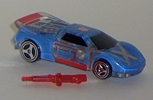
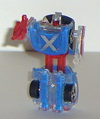
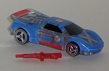
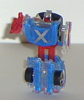
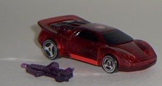
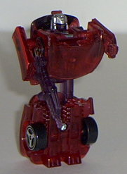

 
Size : Spychanger (comes packaged individually)
Color Scheme : Clear plastic, silver, transparent dark red, black, aqua blue, and some light red and chrome silver
Rating : 5.2
Vehicle mode is a sportscar,
and is VERY nice visually. This mode is pure eye candy. The outside is
clear plastic, but inside, there are really cool techno-style teal patterns
painted on. Add the red stripes, and you've got a neato vehicle mode. The
nice silver detailing on the back end and the big "X" on the front are
nice touches, too. From a rear view, it's somewhat apparent that the end
becomes Crosswise's feet in robot mode, but it's no big deal. Crosswise's
gun cannot be stored in this mode, like the other Wave 1 Spychangers, and
it really cheeses me off that I have to put the gun in another container
when I want to keep him in this mode. It wouldn't have been that hard to
integrate the gun into this mode, honestly- just store it on the underside.
Still, besides this drawback, this is one kickin' vehicle mode.
I'm not really fond
of any of the Spychanger's robot modes, but I think Crosswise's is the
best out of them. His only points of articulation are still only the arms
at the shoulders, which limits playability, and his legs are molded together
into just one piece. This looks rather bad, but at least the neat color
scheme makes up for it partially. Crosswise's chest also fits relatively
snugly into his chest, although the upper edges of the car hood/chest tend
to stick out a bit. At least he's pretty stable in this mode.
Although Crosswise isn't
a particularly good figure, he's pretty nice visually in car mode, and
his color scheme goes together great. He's my personal favorite of the
Wave 1 and Wave 2 Spychangers- although that's not really saying much...
 Crosswise
(2002 Version, Transparent; KB Toys Exclusive)
Crosswise
(2002 Version, Transparent; KB Toys Exclusive)


Size
: Spychanger (comes packaged
individually)
Color Scheme
: Clear plastic, silver,
transparent dark red, black, aqua blue, and some light red and chrome silver
Rating
: 5.2
To everyone's surprise, a KB Toys Exclusive, transparent version of Crosswise came out in summer 2002, packaged individually (and with tech specs on the back this time). Since the original Crosswise was already mostly transparent, this version is probably one of the least changed from its original. The shade of blue is definitely a bit lighter this time, and the solid red is now a transparent dark red, but other than that, this version of Crosswise is pretty much the same as the original. Can't really say I like it any better or worse than the original version, really, since they're so similar. This version's recommended only for completists, if you already have the first one.
 Crosswise
(2003 Version, Transparent; KB Toys Exclusive)
Crosswise
(2003 Version, Transparent; KB Toys Exclusive)


Size
: Spychanger (comes packaged
individually)
Color Scheme
: Transparent dark red,
transparent purple, black, and some silver, light red, and chrome silver
Rating
: 4.8
This version of Crosswise
is pretty much colored the opposite of the old version- now Crosswise is
red instead of blue. His red plastic has also been replaced by transparent
purple plastic, and the two colors go together nicely. However, much of
Crosswise's paint detailing has been taken away- the "X' on the roof os
no longer there, and all of the cooly-painted gadgetry the other two versions
had inside them is no longer visible. Awwwww....
A nice color scheme,
but nothing can beat that see-through aqua blue of the old kind. Still,
different enough to warrant another purchase, if you have a thing for Spychangers.
Review by Beastbot